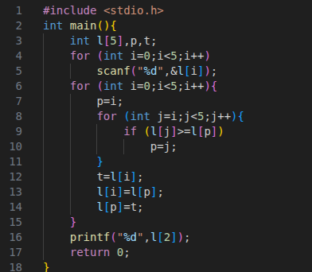
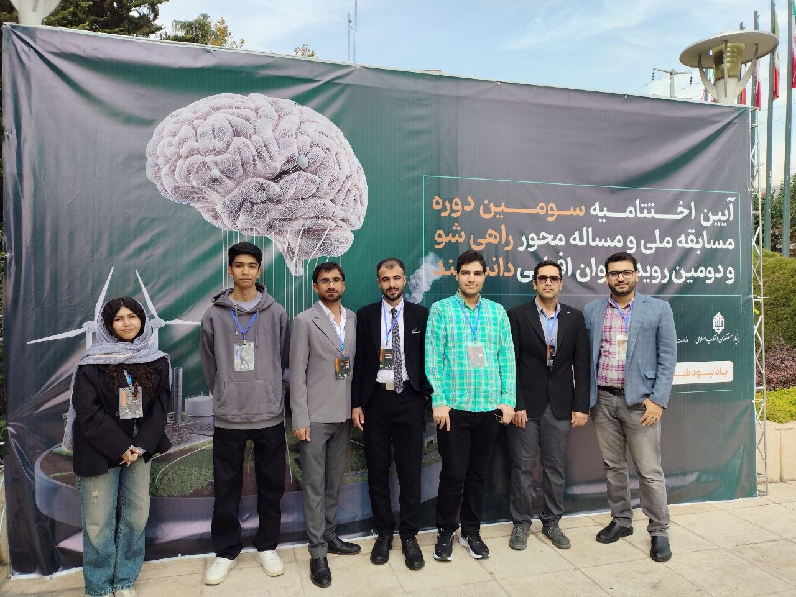

About Me
2022 — University & First Steps
Starting my Computer Engineering studies at the University of Urmia marked the beginning of my journey in software development. With limited programming experience, I started learning from the fundamentals and gradually built my technical foundation.

First Professional Experience
I gained my first professional experience at Pourdanesh Entrepreneurship Company, working on WordPress website development and maintenance. This experience introduced me to real-world projects and motivated me to explore deeper aspects of software development beyond ready-made tools.
Independent Learning & Backend Development
After two years of university studies, I realized that academic learning alone was not enough to reach my goals. I began studying independently, focusing on Python, Django, and Django REST Framework, while strengthening my knowledge of databases and other development tools through practical projects.
2025 — Rahi Sho Competition | Third Place
As part of a six-member team, I participated in the national Rahi Sho problem-solving competition, supported by the National Elites Foundation. We developed RailBot, an AI-powered chatbot designed to assist railway passengers with support, guidance, route information, and ticket booking. My responsibilities included backend development and overseeing the software development lifecycle. Our team achieved third place nationally, which also led to my membership in the National Elites Foundation.

From Competition to Professional Collaboration
Our collaboration continued beyond the competition, and we formed a remote freelance team. Our first project is a one-year development engagement to build a document management system for a company importing vehicles from Dubai to a free trade zone.
And I am currently focused on backend development with Python and Django, with a long-term goal of combining backend engineering and artificial intelligence to build intelligent products that solve real-world problems.